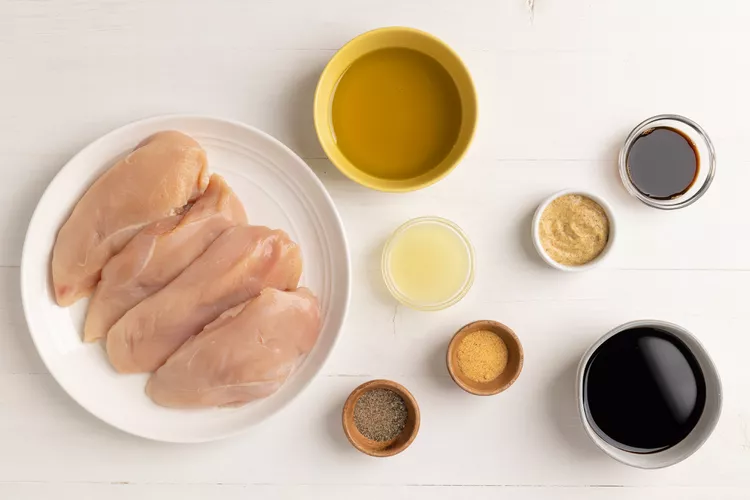
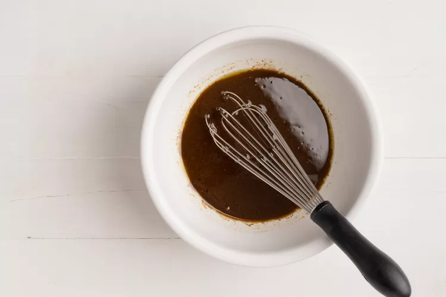
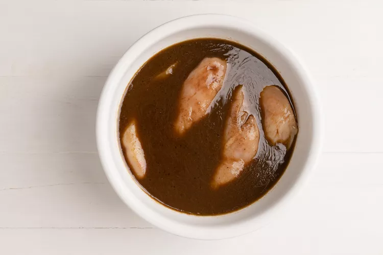
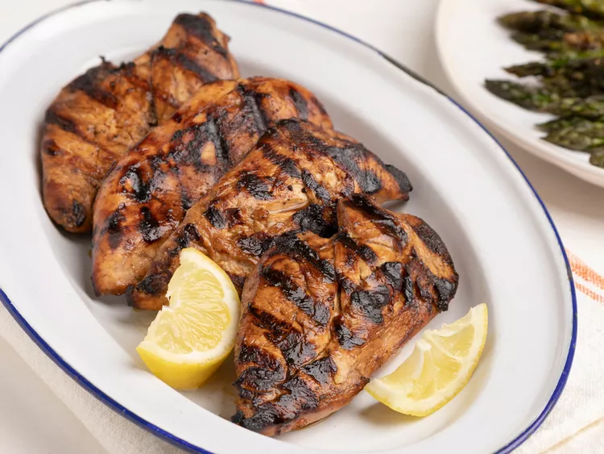

This chicken marinade adds great flavor and a beautiful caramel color to tender, juicy grilled chicken. This easy recipe is a must-try! For best results, don't marinate the chicken for more than 4 hours, or the lemon juice will affect the texture.
Irresistibly juicy, chargrilled chicken begins with a well-executed marinade — and we have a perfectly smoky, salty, and delicious chicken breast marinade recipe that gets the job done every time. TaraNicole's tantalizing blend of soy sauce, liquid smoke, spicy brown mustard, and lemon creates a rich flavor that will make you the star of the cookout. Learn how long to marinate chicken breasts, plus get storage and freezing tips.
Mouthwatering, citrus-spiked grilled chicken breasts are just a few ingredients away. You'll find the full recipe below with step-by-step instructions, but here's what you can expect when you make this top-rated recipe: Begin by combining all ingredients except the chicken breasts in a large bowl. Next, place the chicken in the bowl to coat thoroughly. Cook the chicken according to your recipe.
Original recipe (1X) yields 4 servings
Step 1
Ghater the ingridients
Step 2
Mix olive oil, soy sauce, lemon juice, liquid smoke, mustard, pepper, and garlic powder together in a large glass or ceramic bowl.
Step 3
Place chicken in the bowl and turn to coat with marinade. Cover and marinate in the refrigerator for 1 to 4 hours. For best results, do not marinate longer than 4 hours.
Step 4
Preheat an outdoor grill for high heat and lightly oil the grate.
Step 5
Remove chicken from the marinade and shake off excess. Discard the remaining marinade.
Step 6
Cook chicken on the preheated grill until no longer pink in the center and the juices run clear, 6 to 8 minutes per side. An instant-read thermometer inserted into the center should read at least 165 degrees F (74 degrees C).
Step 7
Serve and enjoy!
